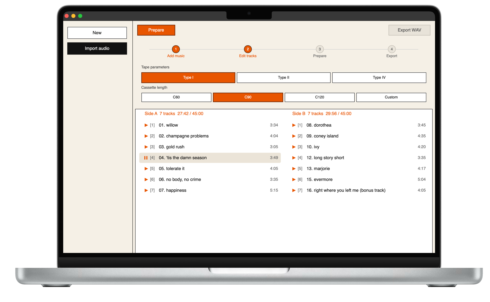

Drop & prepare
Drag a file or import a folder, then one-click Prepare with adaptive mastering and before/after preview.
Prepare digital audio for cassette recording
Adaptive mastering tuned for Type I, II, and IV tape. Build mixtapes from folders, preview before and after, and export WAV files ready to hit record.

Deck is a desktop app built for people who still love the ritual of recording to tape. Pick your formulation and tape length, drop in a track or a whole folder, and let Deck handle loudness, EQ, and headroom so your music survives the transfer to analog.
Drag a file or import a folder, then one-click Prepare with adaptive mastering and before/after preview.
Type I, II, or IV — C60, C90, C120 or custom length. Processing follows your blank tape and deck.
Split tracks across Side A and Side B, reorder the lineup, and check fit before you master.
True-peak limiting, cassette-aware EQ, optional preflight tones — export WAV and hit record.
Choose your platform and install the app.
No. Deck is a standalone desktop application. Import audio, prepare it, and export WAV — all in one window.
WAV, FLAC, AIFF, OGG, and MP3. Export is WAV.
Deck targets cassette transfer: tape formulation profiles, HF headroom, true-peak limiting, and optional tape-aware saturation — so your digital master survives recording to analog and playback on a deck or walkman.
Yes. Import a folder, arrange tracks in the editor, check whether everything fits your tape length, then prepare and export.